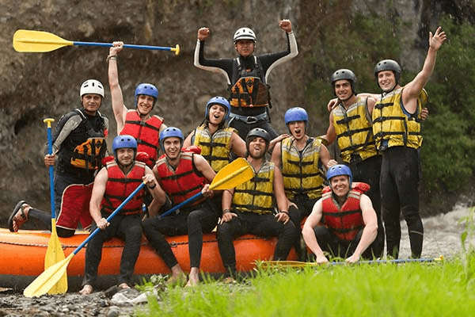
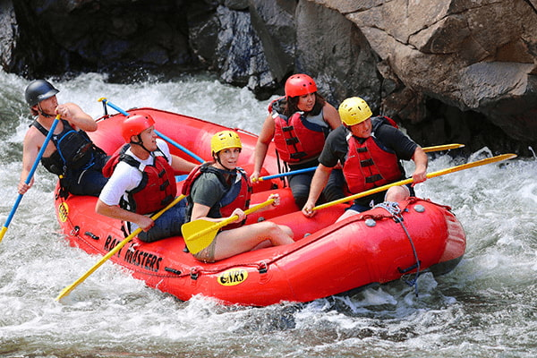
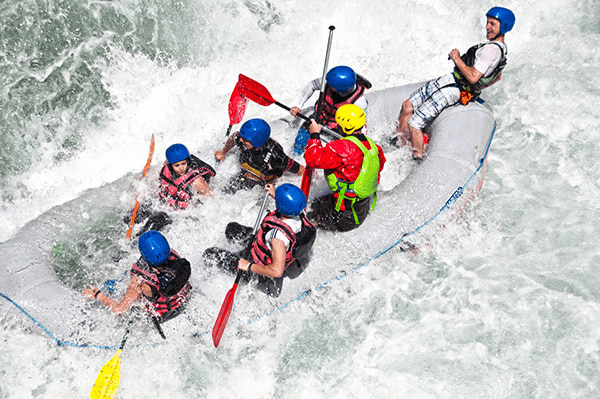
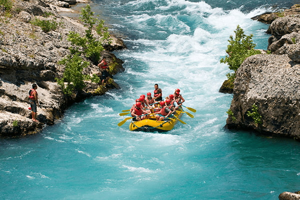
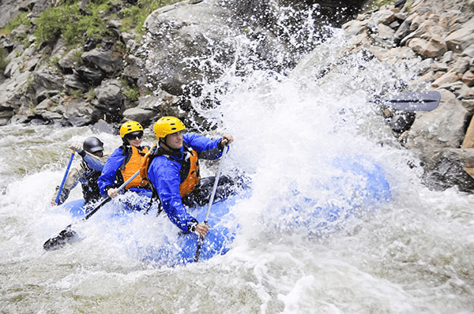

Our Mission

Dry Oar Boating provides safe, exciting, and memorable river adventures for families and thrill-seekers alike. We are committed to preserving natural beauty and fostering a love for the outdoors.


Dry Oar Boating provides safe, exciting, and memorable river adventures for families and thrill-seekers alike. We are committed to preserving natural beauty and fostering a love for the outdoors.
Founded in 1995, Dry Oar Boating started with just two rafts and a passion for the Salmon River. Over the last nearly three decades, we have expanded to cover five major rivers.




